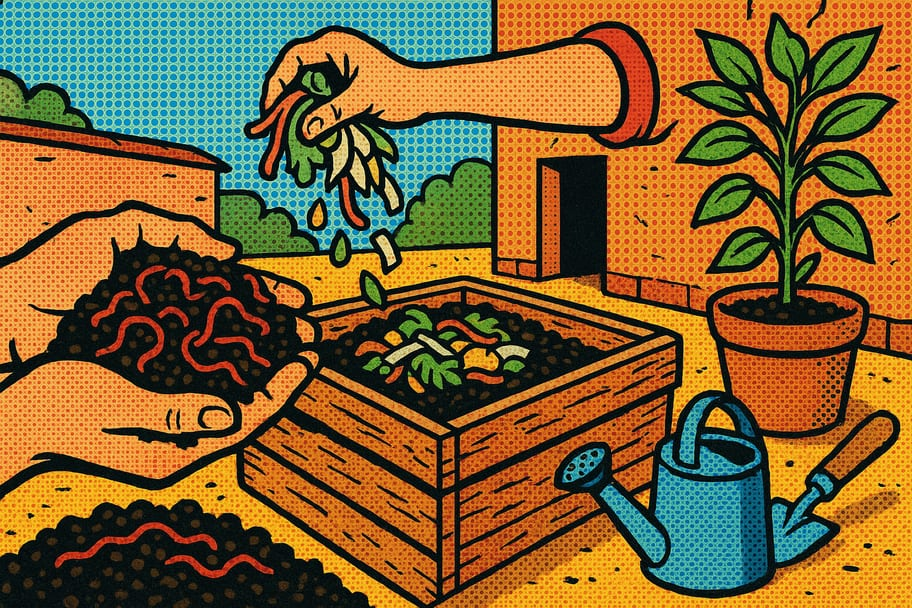

Cómo preparar lombricomposta en casa con lombriz roja californiana
La lombricomposta es una excelente forma de reciclar residuos orgánicos y enriquecer el suelo. Cualquier persona, ya sea en el campo o en la ciudad, puede hacerlo para mejorar sus plantas y reducir la basura.

🧰 Materiales necesarios
- ☐ 1 caja o recipiente de plástico (de al menos 50 litros)
- ☐ 1 kg de lombriz roja californiana
- ☐ 1 kg de tierra o compost
- ☐ 3 kg de residuos orgánicos (frutas y verduras)
- ☐ 1 malla o tela para cubrir
- ☐ agua (suficiente para humedecer)
📋 Paso a paso
-
1Preparar el recipiente
Elige una caja de plástico con tapa. Haz agujeros en la parte inferior y en los laterales para permitir la ventilación.
-
2Agregar la base
Coloca una capa de 5 cm de tierra o compost en el fondo del recipiente. Esto ayudará a las lombrices a establecerse.
-
3Añadir las lombrices
Coloca 1 kg de lombriz roja californiana sobre la tierra. Espárcelas uniformemente para que tengan espacio para moverse.
-
4Incorporar residuos orgánicos
Agrega 3 kg de residuos orgánicos, como restos de frutas y verduras, evitando cáscaras de cítricos y alimentos cocidos. Esto servirá como alimento para las lombrices.
-
5Humedecer la mezcla
Rocía un poco de agua sobre los residuos para mantener la mezcla húmeda, pero sin encharcar. Las lombrices necesitan un ambiente húmedo para vivir.
-
6Cubrir el recipiente
Cubre la caja con una malla o tela para proteger las lombrices de la luz directa. Esto les proporcionará un ambiente oscuro y cómodo.
-
7Revisar regularmente
Cada 2-3 días, revisa la humedad y añade más residuos orgánicos cuando sea necesario. Asegúrate de que la mezcla no se seque.
-
8Cosechar la lombricomposta
Después de 2-3 meses, la lombricomposta estará lista. Se verá oscura y terrosa. Retira la parte superior y recoge la composta en la parte inferior.
-
9Usar la lombricomposta
Utiliza la lombricomposta en tus plantas, huerto o jardín. Es un excelente fertilizante natural que mejorará la salud de tus plantas.
💡 Consejos y variaciones
- No uses productos químicos en los residuos orgánicos.
- Evita agregar cáscaras de cítricos y alimentos cocidos.
- Mantén la temperatura del recipiente entre 15 y 25 grados Celsius.
¿Te fue útil esta guía?
Compártela en tu comunidad y visita más recursos en Guardianes del Pulque.
← Más recursos 💚 Donar